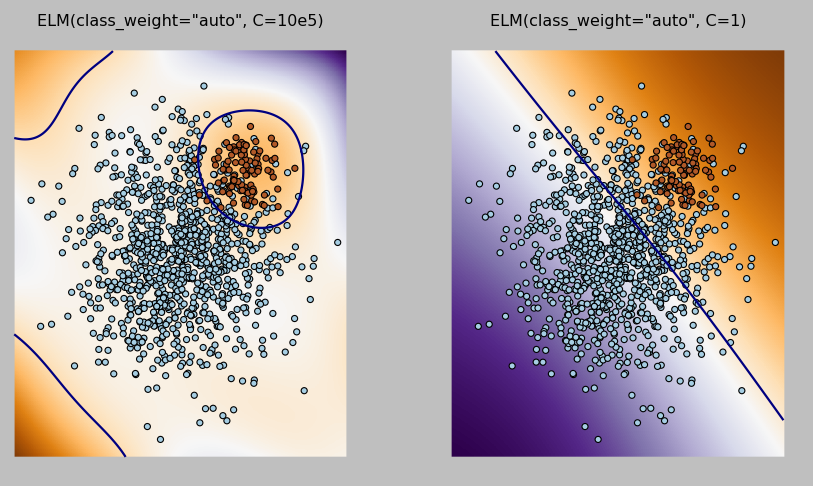
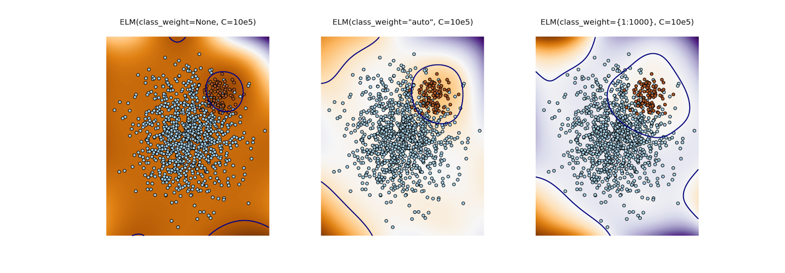

Week 7 - Progress report for the scikit-learn module
I completed the requirements for GSoC 2014, except for the documentation which I am leaving for the remaining duration of the program. Since the mid-term evaluation I implemented the following,
1) Regularized and Weighted Extreme Learning Machines (ELMs);
2) Sequental Extreme Learning Machines;
3) Kernels for ELMs; and
4) Relevant test cases and examples.
I will explain the implementations in more detail below.
1) Regularized and Weighted ELMs
Assuming H is the hidden activations, \(\beta\) is the hidden layer outgoing weights, and y is the target vector; regularized ELMs solves the following equation,
\(\beta = (HH' + I/C)'Hy\) where I is the identity matrix.
The regularization term C determines the decision boundary degree of linearity. Figure 1 shows how regularization - or reducing C - leads to a linear function.

Weighted ELMs is different from regularized ELMs, in that a diagonal weight matrix \(W\) is added to the equation, yielding the following,
\(\beta = (HWH' + I/C)'HWy\)
Index \((i, i)\) in \(W\) corresponds to how much weight is given to sample \(i\), depending on the sample's class. This scheme is used to address the problem with imbalanced datasets; where a class is underrepresented by having few samples compared to other classes and therefore ignored by classifiers. Such minority classes are given higher weights such that the decision boundary is pushed away from them. Figure 2 shows the difference between applying weighting schemes for the minority class, the orange samples.

2) Sequential ELMs
Dealing with million sample datasets is problematic when they have to be in memory all at once for training. Sequential ELMs mitigates this limitation by breaking the dataset into batches and trains on them by per-batch basis using a recursive equation which is but a subtle representation of ELM's original equation. Unfortunately the implementation does not support weights yet.
3) Kernels for ELMs The standard initialization of ELM input weights is the result of a random kernel. However, other kernels, which are best known for training SVMs, can be used to get new hidden activations - like Radial Basis Function, Linear kernel, and the Polynomial kernel.
For the remaining time of GSoC 2014, I will complete the ELMs documentation and add any necessary changes for the completed work.
comments powered by Disqus